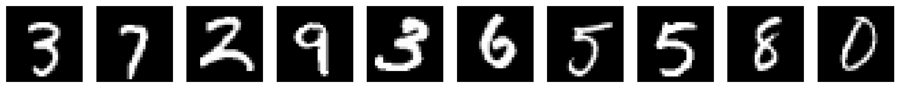
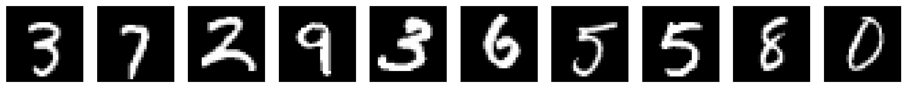

Tutorial 1: Intro to Autoencoders¶
Bonus Day: Autoencoders
By Neuromatch Academy
Content creators: Marco Brigham and the CCNSS team (2014-2018)
Content reviewers: Itzel Olivos, Karen Schroeder, Karolina Stosio, Kshitij Dwivedi, Spiros Chavlis, Michael Waskom
Tutorial Objectives¶
Internal representations and autoencoders¶
How can simple algorithms capture relevant aspects of data and build robust models of the world?
Autoencoders are a family of artificial neural networks (ANNs) that learn internal representations through auxiliary tasks, i.e., learning by doing.
The primary task is to reconstruct output images based on a compressed representation of the inputs. This task teaches the network which details to throw away while still producing images that are similar to the inputs.
A fictitious MNIST cognitive task bundles more elaborate tasks such as removing noise from images, guessing occluded parts, and recovering original image orientation. We use the handwritten digits from the MNIST dataset since it is easier to identify similar images or issues with reconstructions than in other types of data, such as spiking data time series.

The beauty of autoencoders is the possibility to see these internal representations. The bottleneck layer enforces data compression by having fewer units than input and output layers. Further limiting this layer to two or three units enables us to see how the autoencoder is organizing the data internally in two or three-dimensional latent space.
Our roadmap is the following: learn about typical elements of autoencoder architecture in Tutorial 1 (this tutorial), how to extend their performance in Tutorial 2, and use them to solve the MNIST cognitive task in Tutorial 3.
In this tutorial, you will:
Get acquainted with latent space visualizations and apply them to Principal Component Analysis (PCA) and Non-negative Matrix Factorization (NMF)
Build and train a single hidden layer ANN autoencoder
Inspect the representational power of autoencoders with latent spaces of different dimensions
Video 1: Intro¶
Setup¶
Please execute the cell(s) below to initialize the notebook environment.
# Imports
import numpy as np
import matplotlib.pyplot as plt
import torch
from torch import nn, optim
from sklearn import decomposition
from sklearn.datasets import fetch_openml
Figure settings¶
# @title Figure settings
%config InlineBackend.figure_format = 'retina'
plt.style.use("https://raw.githubusercontent.com/NeuromatchAcademy/course-content/NMA2020/nma.mplstyle")
fig_w, fig_h = plt.rcParams['figure.figsize']
Helper functions¶
# @title Helper functions
def downloadMNIST():
"""
Download MNIST dataset and transform it to torch.Tensor
Args:
None
Returns:
x_train : training images (torch.Tensor) (60000, 28, 28)
x_test : test images (torch.Tensor) (10000, 28, 28)
y_train : training labels (torch.Tensor) (60000, )
y_train : test labels (torch.Tensor) (10000, )
"""
X, y = fetch_openml('mnist_784', version=1, return_X_y=True, as_frame=False)
# Trunk the data
n_train = 60000
n_test = 10000
train_idx = np.arange(0, n_train)
test_idx = np.arange(n_train, n_train + n_test)
x_train, y_train = X[train_idx], y[train_idx]
x_test, y_test = X[test_idx], y[test_idx]
# Transform np.ndarrays to torch.Tensor
x_train = torch.from_numpy(np.reshape(x_train,
(len(x_train),
28, 28)).astype(np.float32))
x_test = torch.from_numpy(np.reshape(x_test,
(len(x_test),
28, 28)).astype(np.float32))
y_train = torch.from_numpy(y_train.astype(int))
y_test = torch.from_numpy(y_test.astype(int))
return (x_train, y_train, x_test, y_test)
def init_weights_kaiming_uniform(layer):
"""
Initializes weights from linear PyTorch layer
with kaiming uniform distribution.
Args:
layer (torch.Module)
Pytorch layer
Returns:
Nothing.
"""
# check for linear PyTorch layer
if isinstance(layer, nn.Linear):
# initialize weights with kaiming uniform distribution
nn.init.kaiming_uniform_(layer.weight.data)
def init_weights_kaiming_normal(layer):
"""
Initializes weights from linear PyTorch layer
with kaiming normal distribution.
Args:
layer (torch.Module)
Pytorch layer
Returns:
Nothing.
"""
# check for linear PyTorch layer
if isinstance(layer, nn.Linear):
# initialize weights with kaiming normal distribution
nn.init.kaiming_normal_(layer.weight.data)
def get_layer_weights(layer):
"""
Retrieves learnable parameters from PyTorch layer.
Args:
layer (torch.Module)
Pytorch layer
Returns:
list with learnable parameters
"""
# initialize output list
weights = []
# check whether layer has learnable parameters
if layer.parameters():
# copy numpy array representation of each set of learnable parameters
for item in layer.parameters():
weights.append(item.detach().numpy().copy())
return weights
def eval_mse(y_pred, y_true):
"""
Evaluates Mean Square Error (MSE) between y_pred and y_true
Args:
y_pred (torch.Tensor)
prediction samples
v (numpy array of floats)
ground truth samples
Returns:
MSE(y_pred, y_true)
"""
with torch.no_grad():
criterion = nn.MSELoss()
loss = criterion(y_pred, y_true)
return float(loss)
def eval_bce(y_pred, y_true):
"""
Evaluates Binary Cross-Entropy (BCE) between y_pred and y_true
Args:
y_pred (torch.Tensor)
prediction samples
v (numpy array of floats)
ground truth samples
Returns:
BCE(y_pred, y_true)
"""
with torch.no_grad():
criterion = nn.BCELoss()
loss = criterion(y_pred, y_true)
return float(loss)
def plot_weights_ab(encoder_w_a, encoder_w_b, decoder_w_a, decoder_w_b,
label_a='init', label_b='train',
bins_encoder=0.5, bins_decoder=1.5):
"""
Plots row of histograms with encoder and decoder weights
between two training checkpoints.
Args:
encoder_w_a (iterable)
encoder weights at checkpoint a
encoder_w_b (iterable)
encoder weights at checkpoint b
decoder_w_a (iterable)
decoder weights at checkpoint a
decoder_w_b (iterable)
decoder weights at checkpoint b
label_a (string)
label for checkpoint a
label_b (string)
label for checkpoint b
bins_encoder (float)
norm of extreme values for encoder bins
bins_decoder (float)
norm of extreme values for decoder bins
Returns:
Nothing.
"""
plt.figure(figsize=(fig_w * 1.2, fig_h * 1.2))
# plot encoder weights
bins = np.linspace(-bins_encoder, bins_encoder, num=32)
plt.subplot(221)
plt.title('Encoder weights to unit 0')
plt.hist(encoder_w_a[0].flatten(), bins=bins, alpha=0.3, label=label_a)
plt.hist(encoder_w_b[0].flatten(), bins=bins, alpha=0.3, label=label_b)
plt.legend()
plt.subplot(222)
plt.title('Encoder weights to unit 1')
plt.hist(encoder_w_a[1].flatten(), bins=bins, alpha=0.3, label=label_a)
plt.hist(encoder_w_b[1].flatten(), bins=bins, alpha=0.3, label=label_b)
plt.legend()
# plot decoder weights
bins = np.linspace(-bins_decoder, bins_decoder, num=32)
plt.subplot(223)
plt.title('Decoder weights from unit 0')
plt.hist(decoder_w_a[:, 0].flatten(), bins=bins, alpha=0.3, label=label_a)
plt.hist(decoder_w_b[:, 0].flatten(), bins=bins, alpha=0.3, label=label_b)
plt.legend()
plt.subplot(224)
plt.title('Decoder weights from unit 1')
plt.hist(decoder_w_a[:, 1].flatten(), bins=bins, alpha=0.3, label=label_a)
plt.hist(decoder_w_b[:, 1].flatten(), bins=bins, alpha=0.3, label=label_b)
plt.legend()
plt.tight_layout()
plt.show()
def plot_row(images, show_n=10, image_shape=None):
"""
Plots rows of images from list of iterables (iterables: list, numpy array
or torch.Tensor). Also accepts single iterable.
Randomly selects images in each list element if item count > show_n.
Args:
images (iterable or list of iterables)
single iterable with images, or list of iterables
show_n (integer)
maximum number of images per row
image_shape (tuple or list)
original shape of image if vectorized form
Returns:
Nothing.
"""
if not isinstance(images, (list, tuple)):
images = [images]
for items_idx, items in enumerate(images):
items = np.array(items)
if items.ndim == 1:
items = np.expand_dims(items, axis=0)
if len(items) > show_n:
selected = np.random.choice(len(items), show_n, replace=False)
items = items[selected]
if image_shape is not None:
items = items.reshape([-1] + list(image_shape))
plt.figure(figsize=(len(items) * 1.5, 2))
for image_idx, image in enumerate(items):
plt.subplot(1, len(items), image_idx + 1)
plt.imshow(image, cmap='gray', vmin=image.min(), vmax=image.max())
plt.axis('off')
plt.tight_layout()
def xy_lim(x):
"""
Return arguments for plt.xlim and plt.ylim calculated from minimum
and maximum of x.
Args:
x (list, numpy array or torch.Tensor of floats)
data to be plotted
Returns:
Nothing.
"""
x_min = np.min(x, axis=0)
x_max = np.max(x, axis=0)
x_min = x_min - np.abs(x_max - x_min) * 0.05 - np.finfo(float).eps
x_max = x_max + np.abs(x_max - x_min) * 0.05 + np.finfo(float).eps
return [x_min[0], x_max[0]], [x_min[1], x_max[1]]
def plot_generative(x, decoder_fn, image_shape, n_row=16):
"""
Plots images reconstructed by decoder_fn from a 2D grid in
latent space that is determined by minimum and maximum values in x.
Args:
x (list, numpy array or torch.Tensor of floats)
2D coordinates in latent space
decoder_fn (integer)
function returning vectorized images from 2D latent space coordinates
image_shape (tuple or list)
original shape of image
n_row
number of rows in grid
Returns:
Nothing.
"""
xlim, ylim = xy_lim(np.array(x))
dx = (xlim[1] - xlim[0]) / n_row
grid = [np.linspace(ylim[0] + dx / 2, ylim[1] - dx / 2, n_row),
np.linspace(xlim[0] + dx / 2, xlim[1] - dx / 2, n_row)]
canvas = np.zeros((image_shape[0]*n_row, image_shape[1] * n_row))
cmap = plt.get_cmap('gray')
for j, latent_y in enumerate(grid[0][::-1]):
for i, latent_x in enumerate(grid[1]):
latent = np.array([[latent_x, latent_y]], dtype=np.float32)
with torch.no_grad():
x_decoded = decoder_fn(torch.from_numpy(latent))
x_decoded = x_decoded.reshape(image_shape)
canvas[j*image_shape[0]: (j + 1) * image_shape[0],
i*image_shape[1]: (i + 1) * image_shape[1]] = x_decoded
plt.imshow(canvas, cmap=cmap, vmin=canvas.min(), vmax=canvas.max())
plt.axis('off')
def plot_latent(x, y, show_n=500, fontdict=None, xy_labels=None):
"""
Plots digit class of each sample in 2D latent space coordinates.
Args:
x (list, numpy array or torch.Tensor of floats)
2D coordinates in latent space
y (list, numpy array or torch.Tensor of floats)
digit class of each sample
n_row (integer)
number of samples
fontdict (dictionary)
optional style option for plt.text
xy_labels (list)
optional list with [xlabel, ylabel]
Returns:
Nothing.
"""
if fontdict is None:
fontdict = {'weight': 'bold', 'size': 12}
cmap = plt.get_cmap('tab10')
if len(x) > show_n:
selected = np.random.choice(len(x), show_n, replace=False)
x = x[selected]
y = y[selected]
for my_x, my_y in zip(x, y):
plt.text(my_x[0], my_x[1], str(int(my_y)),
color=cmap(int(my_y) / 10.),
fontdict=fontdict,
horizontalalignment='center',
verticalalignment='center',
alpha=0.8)
if xy_labels is None:
xy_labels = ['$Z_1$', '$Z_2$']
plt.xlabel(xy_labels[0])
plt.ylabel(xy_labels[1])
xlim, ylim = xy_lim(np.array(x))
plt.xlim(xlim)
plt.ylim(ylim)
def plot_latent_generative(x, y, decoder_fn, image_shape, title=None,
xy_labels=None):
"""
Two horizontal subplots generated with encoder map and decoder grid.
Args:
x (list, numpy array or torch.Tensor of floats)
2D coordinates in latent space
y (list, numpy array or torch.Tensor of floats)
digit class of each sample
decoder_fn (integer)
function returning vectorized images from 2D latent space coordinates
image_shape (tuple or list)
original shape of image
title (string)
plot title
xy_labels (list)
optional lsit with [xlabel, ylabel]
Returns:
Nothing.
"""
fig = plt.figure(figsize=(12, 6))
if title is not None:
fig.suptitle(title, y=1.05)
ax = fig.add_subplot(121)
ax.set_title('Encoder map', y=1.05)
plot_latent(x, y, xy_labels=xy_labels)
ax = fig.add_subplot(122)
ax.set_title('Decoder grid', y=1.05)
plot_generative(x, decoder_fn, image_shape)
plt.tight_layout()
plt.show()
def plot_latent_ab(x1, x2, y, selected_idx=None,
title_a='Before', title_b='After', show_n=500):
"""
Two horizontal subplots with encoder maps.
Args:
x1 (list, numpy array or torch.Tensor of floats)
2D coordinates in latent space (left plot)
x2 (list, numpy array or torch.Tensor of floats)
digit class of each sample (right plot)
y (list, numpy array or torch.Tensor of floats)
digit class of each sample
selected_idx (list of integers)
indexes of elements to be plotted
show_n (integer)
maximum number of samples in each plot
s2 (boolean)
convert 3D coordinates (x, y, z) to spherical coordinates (theta, phi)
Returns:
Nothing.
"""
fontdict = {'weight': 'bold', 'size': 12}
if len(x1) > show_n:
if selected_idx is None:
selected_idx = np.random.choice(len(x1), show_n, replace=False)
x1 = x1[selected_idx]
x2 = x2[selected_idx]
y = y[selected_idx]
plt.figure(figsize=(12, 6))
ax = plt.subplot(121)
ax.set_title(title_a, y=1.05)
plot_latent(x1, y, fontdict=fontdict)
ax = plt.subplot(122)
ax.set_title(title_b, y=1.05)
plot_latent(x2, y, fontdict=fontdict)
plt.tight_layout()
def runSGD(net, input_train, input_test, criterion='bce',
n_epochs=10, batch_size=32, verbose=False):
"""
Trains autoencoder network with stochastic gradient descent with Adam
optimizer and loss criterion. Train samples are shuffled, and loss is
displayed at the end of each opoch for both MSE and BCE. Plots training loss
at each minibatch (maximum of 500 randomly selected values).
Args:
net (torch network)
ANN object (nn.Module)
input_train (torch.Tensor)
vectorized input images from train set
input_test (torch.Tensor)
vectorized input images from test set
criterion (string)
train loss: 'bce' or 'mse'
n_epochs (boolean)
number of full iterations of training data
batch_size (integer)
number of element in mini-batches
verbose (boolean)
whether to print final loss
Returns:
Nothing.
"""
# Initialize loss function
if criterion == 'mse':
loss_fn = nn.MSELoss()
elif criterion == 'bce':
loss_fn = nn.BCELoss()
else:
print('Please specify either "mse" or "bce" for loss criterion')
# Initialize SGD optimizer
optimizer = optim.Adam(net.parameters())
# Placeholder for loss
track_loss = []
print('Epoch', '\t', 'Loss train', '\t', 'Loss test')
for i in range(n_epochs):
shuffle_idx = np.random.permutation(len(input_train))
batches = torch.split(input_train[shuffle_idx], batch_size)
for batch in batches:
output_train = net(batch)
loss = loss_fn(output_train, batch)
optimizer.zero_grad()
loss.backward()
optimizer.step()
# Keep track of loss at each epoch
track_loss += [float(loss)]
loss_epoch = f'{i + 1} / {n_epochs}'
with torch.no_grad():
output_train = net(input_train)
loss_train = loss_fn(output_train, input_train)
loss_epoch += f'\t {loss_train:.4f}'
output_test = net(input_test)
loss_test = loss_fn(output_test, input_test)
loss_epoch += f'\t\t {loss_test:.4f}'
print(loss_epoch)
if verbose:
# Print final loss
loss_mse = f'\nMSE\t {eval_mse(output_train, input_train):0.4f}'
loss_mse += f'\t\t {eval_mse(output_test, input_test):0.4f}'
print(loss_mse)
loss_bce = f'BCE\t {eval_bce(output_train, input_train):0.4f}'
loss_bce += f'\t\t {eval_bce(output_test, input_test):0.4f}'
print(loss_bce)
# Plot loss
step = int(np.ceil(len(track_loss) / 500))
x_range = np.arange(0, len(track_loss), step)
plt.figure()
plt.plot(x_range, track_loss[::step], 'C0')
plt.xlabel('Iterations')
plt.ylabel('Loss')
plt.xlim([0, None])
plt.ylim([0, None])
plt.show()
Section 1: Introduction to autoencoders¶
Video 2: Autoencoders¶
This tutorial introduces typical elements of autoencoders, that learn low dimensional representations of data through an auxiliary task of compression and decompression. In general, these networks are characterized by an equal number of input and output units and a bottleneck layer with fewer units.

Autoencoder architectures have encoder and decoder components:
The encoder network compresses high dimensional inputs into lower-dimensional coordinates of the bottleneck layer
The decoder expands bottleneck layer coordinates back to the original dimensionality
Each input presented to the autoencoder maps to a coordinate in the bottleneck layer that spans the lower-dimensional latent space.
Differences between inputs and outputs trigger the backpropagation of loss to adjust weights and better compress/decompress data. Autoencoders are examples of models that automatically build internal representations of the world and use them to predict unseen data.
We’ll use fully-connected AAN architectures due to their lower computational requirements. The inputs to ANNs are vectorized versions of the images (i.e., stretched as a line).
Section 2: The MNIST dataset¶
The MNIST dataset contains handwritten digits in square images of 28x28 pixels of grayscale levels. There are 60,000 training images and 10,000 testing images from different writers.
Get acquainted with the data by inspecting data type, shape, and visualizing samples with the function plot_row.
Helper function: plot_row
Please uncomment the line below to inspect this function.
# help(plot_row)
Section 2.1: Download and prepare MNIST dataset¶
We use the helper function downloadMNIST to download the dataset, transform it into torch.Tensor and assign train and test datasets to (x_train, y_train) and (x_test, y_test), respectively.
(x_train, x_test) contain images and (y_train, y_test) contain labels from 0 to 9.
The original pixel values are integers between 0 and 255. We rescale them between 0 and 1, a more favorable range for training the autoencoders in this tutorial.
The images are vectorized, i.e., stretched as a line. We reshape training and testing images to vectorized versions with the method .reshape and store them in variable input_train and input_test, respectively. The variable image_shape stores the shape of the images, and input_size stores the size of the vectorized versions.
Instructions:
Please execute the cell below
Questions:
What are the shape and numeric representations of
x_trainandinput_train?What is the image shape?
# Download MNIST
x_train, y_train, x_test, y_test = downloadMNIST()
x_train = x_train / 255
x_test = x_test / 255
image_shape = x_train.shape[1:]
input_size = np.prod(image_shape)
input_train = x_train.reshape([-1, input_size])
input_test = x_test.reshape([-1, input_size])
test_selected_idx = np.random.choice(len(x_test), 10, replace=False)
train_selected_idx = np.random.choice(len(x_train), 10, replace=False)
print(f'shape x_train \t\t {x_train.shape}')
print(f'shape x_test \t\t {x_test.shape}')
print(f'shape image \t\t {image_shape}')
print(f'shape input_train \t {input_train.shape}')
print(f'shape input_test \t {input_test.shape}')
shape x_train torch.Size([60000, 28, 28])
shape x_test torch.Size([10000, 28, 28])
shape image torch.Size([28, 28])
shape input_train torch.Size([60000, 784])
shape input_test torch.Size([10000, 784])
Visualize samples¶
The variables train_selected_idx and test_selected_idx store 10 random indexes from the train and test data.
We use the function np.random.choice to select 10 indexes from x_train and y_train without replacement (replacement=False).
Instructions:
Please execute the cells below
The first cell display different samples each time, the second cell always displays the same samples
# top row: random images from test set
# bottom row: images selected with test_selected_idx
plot_row([x_test, x_test[test_selected_idx]])
Section 3: Latent space visualization¶
This section introduces tools for visualization of latent space and applies them to Principal Component Analysis (PCA), already introduced in tutorial W1D5 Dimensionality reduction. Please see the exercise in the Bonus section for Non-negative Matrix Factorization (NMF).
The plotting function plot_latent_generative helps visualize the encoding of inputs from high dimension into 2D latent space, and decoding back to the original dimension. This function produces two plots:
Encoder map shows the mapping from input images to coordinates \((z_1, z_2)\) in latent space, with overlaid digit labels
Decoder grid shows reconstructions from a grid of latent space coordinates \((z_1, z_2)\)

The latent space representation is a new coordinate system \((z_1, z_2)\) that hopefully captures relevant structure from high-dimensional data. The coordinates of each input only matter relative to those of other inputs, i.e., we often care about separability between different classes of digits rather than their location.
The encoder map provides direct insight into the organization of latent space. Keep in mind that latent space only contains coordinates \((z_1, z_2)\). We overlay additional information such as digit labels for insight into the latent space structure.
The plot on the left is the raw latent space representation corresponding to the plot on the right with digit labels overlaid.

Section 3.1: MNIST with PCA¶
Exercise 1: Visualize PCA latent space (2D)¶
The tutorial W1D5 Dimensionality reduction introduced PCA decomposition. The case of two principal components (PCA1 and PCA2) generates a latent space in 2D.

In tutorial W1D5, PCA decomposition was implemented directly and also by using module sklearn.decomposition from the package scikit-learn. This module includes several matrix decomposition algorithms that are useful as dimensionality reduction techniques.
Their usage is very straightforward, as shown by this example for truncated SVD:
svd = decomposition.TruncatedSVD(n_components=2)
svd.fit(input_train)
svd_latent_train = svd.transform(input_train)
svd_latent_test = svd.transform(input_test)
svd_reconstruction_train = svd.inverse_transform(svd_latent_train)
svd_reconstruction_test = svd.inverse_transform(svd_latent_test)
in this exercise, we’ll use decomposition.PCA (docs here) for PCA decomposition.
Instructions:
Initialize
decomposition.PCAin 2 dimensionsFit
input_trainwith.fitmethod ofdecomposition.PCAObtain latent space representation of
input_testVisualize latent space with
plot_latent_generative
Helper function: plot_latent_generative
Please uncomment the line below to inspect this function.
¶
Execute this cell to inspect plot_latent_generative!
# @title
# @markdown Execute this cell to inspect `plot_latent_generative`!
help(plot_latent_generative)
Help on function plot_latent_generative in module __main__:
plot_latent_generative(x, y, decoder_fn, image_shape, title=None, xy_labels=None)
Two horizontal subplots generated with encoder map and decoder grid.
Args:
x (list, numpy array or torch.Tensor of floats)
2D coordinates in latent space
y (list, numpy array or torch.Tensor of floats)
digit class of each sample
decoder_fn (integer)
function returning vectorized images from 2D latent space coordinates
image_shape (tuple or list)
original shape of image
title (string)
plot title
xy_labels (list)
optional lsit with [xlabel, ylabel]
Returns:
Nothing.
####################################################
## TODO for students: perform PCA and visualize latent space and reconstruction
####################################################
# create the model
# pca = decomposition.PCA(...)
# fit the model on training data
# pca.fit(...)
# transformation on 2D space
# pca_latent_test = pca.transform(...)
# Uncomment to test your code!
# plot_latent_generative(pca_latent_test, y_test, pca.inverse_transform,
# image_shape=image_shape)
Example output:

Section 3.2: Qualitative analysis PCA¶
The encoder map shows how well the encoder is distinguishing between digit classes. We see that digits 1 and 0 are in opposite regions of the first principal component axis, and similarly for digits 9 and 3 for the second principal component.
The decoder grid indicates how well the decoder is recovering images from latent space coordinates. Overall, digits 1, 0, and 9 are the most recognizable.
Let’s inspect the principal components to understand these observations better. The principal components are available as pca.components_ and shown below.

Notice that the first principal component encodes digit 0 with positive values (in white) and digit 1 in negative values (in black). The colormap encodes the minimum values in black and maximum values in white, and we know their signs by looking at coordinates in the first principal component axis for digits 0 and 1.
The first principal component axis encodes the “thickness” of the digits: thin digits on the left and tick digits on the right.
Similarly, the second principal component encodes digit 9 with positive values (in white) and digit 3 with negative values (in black).
The second principal component axis is encoding, well, another aspect besides “thickness” of digits (why?).
The reconstruction grid also shows that digits 4 and 7 are indistinguishable from digit 9 and similarly for digits 2 and 3.
Instructions:
Please execute the cell(s) below
Plot reconstruction samples a few times to get a visual feel of the digit confusions (use keyword
image_shapeto visualize the vectorized images).
pca_components = pca.components_
plot_row(pca_components, image_shape=image_shape)
pca_output_test = pca.inverse_transform(pca_latent_test)
plot_row([input_test, pca_output_test], image_shape=image_shape)
Section 4: ANN autoencoder¶
Let’s implement a shallow ANN autoencoder with a single hidden layer.
Design ANN autoencoder (32D)¶
Here we introduce a technique for quickly building Pytorch models best suited for the initial exploration phase of your research project.
The object-oriented programming (OOP) presented in tutorial W3D4 is your top choice after better understanding the model’s architecture and components.
Using this concise technique, a network equivalent to DeepNetReLU from W3D4 tutorial 1 is defined as:
model = nn.Sequential(nn.Linear(n_input, n_hidden),
nn.ReLU(),
nn.Linear(n_hidden, n_output))
Designing and training efficient neural networks currently requires some thought, experience, and testing for choosing between available options, such as the number of hidden layers, loss function, optimizer function, mini-batch size, etc. Choosing these hyper-parameters may soon become more of an engineering process with our increasing analytical understanding of these systems and their learning dynamics.
The references below are great to learn more about neural network design and best practices:
Neural Networks and Deep Learning by Michael Nielsen is an excellent reference for beginners
Deep Learning by Ian Goodfellow, Yoshua Bengio, and Aaron Courville provides in-depth and extensive coverage
A disciplined approach to neural network hyper-parameters: Part 1 – learning rate, batch size, momentum, and weight decay by L. Smith covers efficient ways to set hyper-parameters
Exercise 2: Design ANN autoencoder¶
We will use a rectifier ReLU units in the bottleneck layer with encoding_dim=32 units, and sigmoid units in the output layer. You can read more about activation functions here and rectifiers here.


We rescaled images to values between 0 and 1 for compatibility with sigmoid units in the output (why?). Such mapping is without loss of generality since any (finite) range can map a one-to-one correspondence to values between 0 and 1.
Both ReLU and sigmoid units provide non-linear computation to the encoder and decoder components. The sigmoid units, additionally, ensure output values to be in the same range as the inputs. These units could be swapped by ReLU, in which case output values would sometimes be negative or greater than 1. The sigmoid units of the decoder enforce a numerical constraint that expresses our domain knowledge of the data.
Instructions
nn.Sequentialdefines and initializes an ANN with layer sizes (input_shape, encoding_dim, input_shape)nn.Lineardefines a linear layer with the size of the inputs and outputs as argumentsnn.ReLUandnn.Sigmoidencode ReLU and sigmoid unitsVisualize the initial output using
plot_rowwith input and output images
encoding_size = 32
model = nn.Sequential(
nn.Linear(input_size, encoding_size),
nn.ReLU(),
######################################################################
## TODO for students: add linear and sigmoid layers
######################################################################
# insert your code here to add the layer
# nn.Linear(...),
# insert the activation function
# ....
)
print(f'Model structure \n\n {model}')
Model structure
Sequential(
(0): Linear(in_features=784, out_features=32, bias=True)
(1): ReLU()
)
SAMPLE OUTPUT
Sequential(
(0): Linear(in_features=784, out_features=32, bias=True)
(1): ReLU()
(2): Linear(in_features=32, out_features=784, bias=True)
(3): Sigmoid()
)
with torch.no_grad():
output_test = model(input_test)
plot_row([input_test.float(), output_test], image_shape=image_shape)
---------------------------------------------------------------------------
ValueError Traceback (most recent call last)
/tmp/ipykernel_2084/2898546608.py in <module>
2 output_test = model(input_test)
3
----> 4 plot_row([input_test.float(), output_test], image_shape=image_shape)
/tmp/ipykernel_2084/1528605679.py in plot_row(images, show_n, image_shape)
249
250 if image_shape is not None:
--> 251 items = items.reshape([-1] + list(image_shape))
252
253 plt.figure(figsize=(len(items) * 1.5, 2))
ValueError: cannot reshape array of size 320 into shape (28,28)
Train autoencoder (32D)¶
The function runSGD trains the autoencoder with stochastic gradient descent using Adam optimizer (optim.Adam) and provides a choice between Mean Square Errors (MSE with nn.MSELoss) and Binary Cross-entropy (BCE with nn.BCELoss).
The figures below illustrate these losses, where \(\hat{Y}\) is the output value, and \(Y\) is the target value.


Train the network for n_epochs=10 epochs and batch_size=64 with runSGD and MSE loss, and visualize a few reconstructed samples.
Please execute the cells below to construct and train the model!
encoding_size = 32
model = nn.Sequential(
nn.Linear(input_size, encoding_size),
nn.ReLU(),
nn.Linear(encoding_size, input_size),
nn.Sigmoid()
)
n_epochs = 10
batch_size = 64
runSGD(model, input_train, input_test, criterion='mse',
n_epochs=n_epochs, batch_size=batch_size)
Epoch Loss train Loss test
1 / 10 0.0293 0.0290
2 / 10 0.0222 0.0218
3 / 10 0.0198 0.0195
4 / 10 0.0188 0.0183
5 / 10 0.0183 0.0179
6 / 10 0.0181 0.0176
7 / 10 0.0179 0.0175
8 / 10 0.0178 0.0173
9 / 10 0.0177 0.0173
10 / 10 0.0176 0.0172
with torch.no_grad():
output_test = model(input_test)
plot_row([input_test[test_selected_idx], output_test[test_selected_idx]],
image_shape=image_shape)

Choose the loss function¶
The loss function determines what the network is optimizing during training, and this translates to the visual aspect of reconstructed images.
For example, isolated black pixels in the middle of white regions are very unlikely and look noisy. The network can prioritize avoiding such scenarios by maximally penalizing white pixels that turn out black and vice-versa.
The figure below compares MSE with BCE with a target pixel value \(Y=1\), and the output ranging from \(\hat{Y}\in [0, 1]\). The MSE loss has a gentle quadratic rise in this range. Notice how BCE loss dramatically increases for dark pixels \(\hat{Y}\) lower than 0.4.

Let’s look at their derivatives \(d\,\text{Loss}/d\,\hat{Y}\) to make this comparison more objective. The derivative of MSE loss is linear with slope \(-2\), whereas BCE takes off as \(1/\hat{Y}\) for dark pixel values (why?).

We reduced the plotting range to \([0.05, 1]\) to share the same y-axis scale for both loss functions (why?).
Let’s switch to BCE loss and verify the effects of maximally penalizing white pixels that turn out black and vice-versa. The visual differences between losses will be subtle since the network is converging well in both cases.
Look for isolated white/black pixel areas in MSE loss reconstructions.
We will first retrain under MSE loss for 2 epochs to accentuate differences, and similarly under BCE loss.
Please execute the cells below to train with MSE and BCE, respectively.
encoding_size = 32
n_epochs = 2
batch_size = 64
model = nn.Sequential(
nn.Linear(input_size, encoding_size),
nn.ReLU(),
nn.Linear(encoding_size, input_size),
nn.Sigmoid()
)
runSGD(model, input_train, input_test, criterion='mse',
n_epochs=n_epochs, batch_size=batch_size, verbose=True)
Epoch Loss train Loss test
1 / 2 0.0269 0.0264
2 / 2 0.0191 0.0186
MSE 0.0191 0.0186
BCE 0.1352 0.1327
with torch.no_grad():
output_test = model(input_test)
plot_row([input_test[test_selected_idx], output_test[test_selected_idx]],
image_shape=image_shape)
encoding_size = 32
n_epochs = 2
batch_size = 64
model = nn.Sequential(
nn.Linear(input_size, encoding_size),
nn.ReLU(),
nn.Linear(encoding_size, input_size),
nn.Sigmoid()
)
runSGD(model, input_train, input_test, criterion='bce',
n_epochs=n_epochs, batch_size=batch_size, verbose=True)
Epoch Loss train Loss test
1 / 2 0.1546 0.1532
2 / 2 0.1311 0.1300
MSE 0.0219 0.0216
BCE 0.1311 0.1300
with torch.no_grad():
output_test = model(input_test)
plot_row([input_test[test_selected_idx], output_test[test_selected_idx]],
image_shape=image_shape)
Design ANN autoencoder (2D)¶
Reducing the number of bottleneck units to encoding_size=2 generates a 2D latent space as for PCA before. The coordinates \((z_1, z_2)\) of the encoder map represent unit activations in the bottleneck layer.

The encoder component provides (\(z_1, z_2\)) coordinates in latent space, and the decoder component generates image reconstructions from (\(z_1, z_2\)). Specifying a sequence of layers from the autoencoder network defines these sub-networks.
model = nn.Sequential(...)
encoder = model[:n]
decoder = model[n:]
This architecture works well with a bottleneck layer with 32 units but fails to converge with two units. Check the exercises in Bonus section to understand this failure more and two options to address it: better weight initialization and changing the activation function.
Here we opt for PReLU units in the bottleneck layer to add negative activations with a learnable parameter. This change affords additional wiggle room for the autoencoder to model data with only two units in the bottleneck layer.

Instructions
Please execute the cells below:
encoding_size = 2
model = nn.Sequential(
nn.Linear(input_size, encoding_size),
nn.PReLU(),
nn.Linear(encoding_size, input_size),
nn.Sigmoid()
)
encoder = model[:2]
decoder = model[2:]
print(f'Autoencoder \n\n {model}')
Autoencoder
Sequential(
(0): Linear(in_features=784, out_features=2, bias=True)
(1): PReLU(num_parameters=1)
(2): Linear(in_features=2, out_features=784, bias=True)
(3): Sigmoid()
)
print(f'Encoder \n\n {encoder}')
Encoder
Sequential(
(0): Linear(in_features=784, out_features=2, bias=True)
(1): PReLU(num_parameters=1)
)
print(f'Decoder \n\n {decoder}')
Decoder
Sequential(
(2): Linear(in_features=2, out_features=784, bias=True)
(3): Sigmoid()
)
Train the autoencoder (2D)¶
Train the network for n_epochs=10 epochs and batch_size=64 with runSGD and BCE loss, and visualize latent space.
Please execute the cells below to train the autoencoder!
n_epochs = 10
batch_size = 64
# train the autoencoder
runSGD(model, input_train, input_test, criterion='bce',
n_epochs=n_epochs, batch_size=batch_size)
Epoch Loss train Loss test
1 / 10 0.2632 0.2630
2 / 10 0.2573 0.2572
3 / 10 0.2523 0.2521
4 / 10 0.2470 0.2466
5 / 10 0.2417 0.2411
6 / 10 0.2373 0.2366
7 / 10 0.2339 0.2330
8 / 10 0.2315 0.2304
9 / 10 0.2300 0.2289
10 / 10 0.2289 0.2277
with torch.no_grad():
latent_test = encoder(input_test)
plot_latent_generative(latent_test, y_test, decoder,
image_shape=image_shape)
Expressive power in 2D¶
The latent space representation of shallow autoencoder with a 2D bottleneck is similar to that of PCA. How can this linear dimensionality reduction technique be comparable to our non-linear autoencoder?
Training an autoencoder with linear activation functions under MSE loss is very similar to performing PCA. Using piece-wise linear units, sigmoidal output unit, and BCE loss doesn’t seem to change this behavior qualitatively. The network lacks capacity in terms of learnable parameters to make good use of its non-linear operations and capture non-linear aspects of the data.
The similarity between representations is apparent when plotting decoder maps side-by-side. Look for classes of digits that cluster successfully, and those still mixing with others.
Execute the cell below for a PCA vs. Autoencoder (2D) comparison!
plot_latent_ab(pca_latent_test, latent_test, y_test,
title_a='PCA', title_b='Autoencoder (2D)')
Summary¶
In this tutorial, we got comfortable with the basic techniques to create and visualize low-dimensional representations and build shallow autoencoders.
We saw that PCA and shallow autoencoder have similar expressive power in 2D latent space, despite the autoencoder’s non-linear character.
The shallow autoencoder lacks learnable parameters to take advantage of non-linear operations in encoding/decoding and capture non-linear patterns in data.
The next tutorial extends the autoencoder architecture to learn richer internal representations of data required for tackling the MNIST cognitive task.
Video 3: Wrap-up¶
Bonus¶
Failure mode with ReLU units in 2D¶
An architecture with two units in the bottleneck layer, ReLU units, and default weight initialization may fail to converge, depending on the minibatch sequence, choice of the optimizer, etc. To illustrate this failure mode, we first set the random number generators (RNGs) to reproduce an example of failed convergence:
torch.manual_seed(0)
np.random.seed(0)
Afterward, we set the RNGs to reproduce an example of successful convergence:
torch.manual_seed(1)
Train the network for n_epochs=10 epochs and batch_size=64 and check the encoder map and reconstruction grid in each case.
We then activate our x-ray vision and check the distribution of weights in encoder and decoder components. Recall that encoder maps input pixels to bottleneck units (encoder weights shape=(2, 784)), and decoder maps bottleneck units to output pixels (decoder weights shape=(784, 2)).
Network models often initialize with random weights close to 0. The default weight initialization for linear layers in Pytorch is sampled from a uniform distribution [-limit, limit] with limit=1/sqrt(fan_in), where fan_in is the number of input units in the weight tensor.
We compare the distribution of weights on network initialization to that after training. Weights that fail to learn during training keep to their initial distribution. On the other hand, weights that are adjusted by SGD during training are likely to have a change in distribution.
Encoder weights may even acquire a bell-shaped form. This effect may be related to the following: SGD adds a sequence of positive and negative increments to each initial weight. The Central Limit Theorem (CLT) would predict a gaussian histogram if increments were independent in sequences and between sequences. The deviation from gaussianity is a measure of the inter-dependency of SGD increments.
Instructions:
Please execute the cells below
Start with
torch.manual_seed = 0for an example of failed convergenceCheck encoder mapping collapsed into a single axis
Verify collapsed dimension corresponds to unchanged weights
Change
torch.manual_seed = 1for an example of successful convergenceRun
help(get_layer_weights)for additional details on retrieving learnable parameters (weights and biases)
encoding_size = 2
n_epochs = 10
batch_size = 64
# set PyTorch RNG seed
torch_seed = 0
# reset RNG for weight initialization
torch.manual_seed(torch_seed)
np.random.seed(0)
model = nn.Sequential(
nn.Linear(input_size, encoding_size),
nn.ReLU(),
nn.Linear(encoding_size, input_size),
nn.Sigmoid()
)
encoder = model[:2]
decoder = model[2:]
# retrieve weights and biases from the encoder before training
encoder_w_init, encoder_b_init = get_layer_weights(encoder[0])
decoder_w_init, decoder_b_init = get_layer_weights(decoder[0])
# reset RNG for minibatch sequence
torch.manual_seed(torch_seed)
np.random.seed(0)
# train the autoencoder
runSGD(model, input_train, input_test, criterion='bce',
n_epochs=n_epochs, batch_size=batch_size)
# retrieve weights and biases from the encoder after training
encoder_w_train, encoder_b_train = get_layer_weights(encoder[0])
decoder_w_train, decoder_b_train = get_layer_weights(decoder[0])
Epoch Loss train Loss test
1 / 10 0.2654 0.2651
2 / 10 0.2600 0.2598
3 / 10 0.2573 0.2572
4 / 10 0.2554 0.2552
5 / 10 0.2539 0.2538
6 / 10 0.2524 0.2523
7 / 10 0.2509 0.2508
8 / 10 0.2493 0.2491
9 / 10 0.2476 0.2474
10 / 10 0.2460 0.2458
with torch.no_grad():
latent_test = encoder(input_test)
output_test = model(input_test)
plot_latent_generative(latent_test, y_test, decoder, image_shape=image_shape)
plot_row([input_test[test_selected_idx], output_test[test_selected_idx]],
image_shape=image_shape)

plot_weights_ab(encoder_w_init, encoder_w_train, decoder_w_init,
decoder_w_train)
Exercise 3: Choosing weight initialization¶
An improved weight initialization for ReLU units avoids the failure mode from the previous exercise. A popular choice for rectifier units is Kaiming uniform: sampling from uniform distribution \(\mathcal{U}(-limit, limit)\) with \(limit=\sqrt{6/fan\_in}\), where \(fan\_in\) is the number of input units in the weight tensor (see the relevant article for details). Example of resetting all autoencoder weights to Kaiming uniform:
model.apply(init_weights_kaiming_uniform)
An alternative is to sample from a gaussian distribution \(\mathcal{N}(\mu, \sigma^2)\) with \(\mu=0\) and \(\sigma=1/\sqrt{fan\_in}\). Example for reseting all but the two last autoencoder layers to Kaiming normal:
model[:-2].apply(init_weights_kaiming_normal)
For more information on weight initialization, the references below are a good starting point:
Understanding the difficulty of training deep feedforward neural networks
Delving deep into rectifiers: Surpassing human-level performance on ImageNet classification
Instructions:
Reset encoder weights with
init_weights_kaiming_uniformCompare with resetting with
init_weights_kaiming_normalSee
help(init_weights_kaiming_uniform)andhelp(init_weights_kaiming_normal)for additional details
encoding_size = 2
n_epochs = 10
batch_size = 64
# set PyTorch RNG seed
torch_seed = 0
model = nn.Sequential(
nn.Linear(input_size, encoding_size),
nn.ReLU(),
nn.Linear(encoding_size, input_size),
nn.Sigmoid()
)
encoder = model[:2]
decoder = model[2:]
# reset RNGs for weight initialization
torch.manual_seed(torch_seed)
np.random.seed(0)
######################################################################
## TODO for students: reset encoder weights and biases
######################################################################
# reset encoder weights and biases
# encoder.apply(...)
# retrieve weights and biases from the encoder before training
encoder_w_init, encoder_b_init = get_layer_weights(encoder[0])
decoder_w_init, decoder_b_init = get_layer_weights(decoder[0])
# reset RNGs for minibatch sequence
torch.manual_seed(torch_seed)
np.random.seed(0)
# train the autoencoder
runSGD(model, input_train, input_test, criterion='bce',
n_epochs=n_epochs, batch_size=batch_size)
# retrieve weights and biases from the encoder after training
encoder_w_train, encoder_b_train = get_layer_weights(encoder[0])
decoder_w_train, decoder_b_train = get_layer_weights(decoder[0])
Epoch Loss train Loss test
1 / 10 0.2654 0.2651
2 / 10 0.2600 0.2598
3 / 10 0.2573 0.2572
4 / 10 0.2554 0.2552
5 / 10 0.2539 0.2538
6 / 10 0.2524 0.2523
7 / 10 0.2509 0.2508
8 / 10 0.2493 0.2491
9 / 10 0.2476 0.2474
10 / 10 0.2460 0.2458
Example output:

with torch.no_grad():
latent_test = encoder(input_test)
output_test = model(input_test)
plot_latent_generative(latent_test, y_test, decoder,
image_shape=image_shape)
plot_row([input_test[test_selected_idx], output_test[test_selected_idx]],
image_shape=image_shape)
plot_weights_ab(encoder_w_init, encoder_w_train, decoder_w_init,
decoder_w_train)
Choose the activation function¶
An alternative to specific weight initialization is to choose an activation unit that performs better in this context. We will use PReLU units in the bottleneck layer, which adds a learnable parameter for negative activations.
This change affords a little bit more of wiggle room for the autoencoder to model data compared to ReLU units.
Instructions:
Please execute the cells below
encoding_size = 2
n_epochs = 10
batch_size = 64
# set PyTorch RNG seed
torch_seed = 0
# reset RNGs for weight initialization
torch.manual_seed(torch_seed)
np.random.seed(0)
model = nn.Sequential(
nn.Linear(input_size, encoding_size),
nn.PReLU(),
nn.Linear(encoding_size, input_size),
nn.Sigmoid()
)
encoder = model[:2]
decoder = model[2:]
# retrieve weights and biases from the encoder before training
encoder_w_init, encoder_b_init = get_layer_weights(encoder[0])
decoder_w_init, decoder_b_init = get_layer_weights(decoder[0])
# reset RNGs for minibatch sequence
torch.manual_seed(torch_seed)
np.random.seed(0)
# train the autoencoder
runSGD(model, input_train, input_test, criterion='bce',
n_epochs=n_epochs, batch_size=batch_size)
# retrieve weights and biases from the encoder after training
encoder_w_train, encoder_b_train = get_layer_weights(encoder[0])
decoder_w_train, decoder_b_train = get_layer_weights(decoder[0])
Epoch Loss train Loss test
1 / 10 0.2622 0.2619
2 / 10 0.2560 0.2558
3 / 10 0.2509 0.2505
4 / 10 0.2457 0.2451
5 / 10 0.2411 0.2405
6 / 10 0.2378 0.2373
7 / 10 0.2356 0.2352
8 / 10 0.2340 0.2337
9 / 10 0.2327 0.2325
10 / 10 0.2318 0.2319
with torch.no_grad():
latent_test = encoder(input_test)
plot_latent_generative(latent_test, y_test, decoder, image_shape=image_shape)
plot_weights_ab(encoder_w_init, encoder_w_train, decoder_w_init,
decoder_w_train)
Qualitative analysis NMF¶
We proceed with non-negative matrix factorization (NMF) using sk.decomposition.NMF (docs here).
A product of positive matrices \(W\) and \(H\) approximates data matrix \(X\), i.e., \(X \approx W H\).
The columns of \(W\) play the same role as the principal components in PCA.
Digit classes 0 and 1 are the furthest apart in latent space and better clustered.
Looking at the first component, we see that images gradually resemble digit class 0. A mix between digits classes 1 and 9 in the second component shows a similar progression.
That data is shifted by 0.5 to avoid failure modes near 0 - this is probably related to our scaling choice. Try it without shifting by 0.5.
The parameter init='random' scales the initial non-negative random matrices and often provides better results - try it as well!
Please execute the cells below, to run NMF.
nmf = decomposition.NMF(n_components=2, init='random')
nmf.fit(input_train + 0.5)
nmf_latent_test = nmf.transform(input_test + 0.5)
plot_latent_generative(nmf_latent_test, y_test, nmf.inverse_transform,
image_shape=image_shape)
/opt/hostedtoolcache/Python/3.7.11/x64/lib/python3.7/site-packages/sklearn/decomposition/_nmf.py:1091: ConvergenceWarning: Maximum number of iterations 200 reached. Increase it to improve convergence.
" improve convergence." % max_iter, ConvergenceWarning)

nmf_components = nmf.components_
plot_row(nmf_components, image_shape=image_shape)
nmf_output_test = nmf.inverse_transform(nmf_latent_test)
plot_row([input_test, nmf_output_test], image_shape=image_shape)
 
